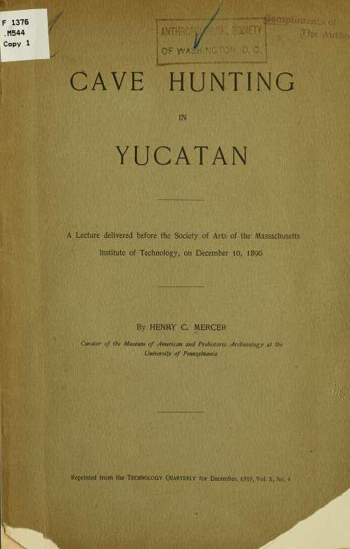
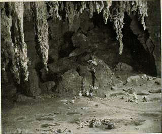

|  |
 |
| FIG 1: Actun Ceh, Opichen (Cave of the Deer). In the Sierra de Yucatan, about two and a half leagues westward from Opichen. The immense underground room, reached after a long chamber in the darkness, is lit from above through a skylight in the middle of its ceiling. The roots of alamo trees on the right hang downward from the brink of this luminous chasm to the cave floor, from which remarkable stalagmitic forms, tinted by contact of light and air, rise on all sides. Several of the prominent surfaces have been enscribed by the ancient cave visitors with dots and circles, suggesting the human eyes, nose, and mouth, and the outline of animals resembling deer. |
Cave hunting in Yucatan
By Henry C. Mercer
Introduction.
Cave Hunting Explained.
Two years ago the Corwith expedition of the University of Pennsylvania (under the kind auspices of Dr. S. Weir Mitchell, and named after its generous donor, Mr. John W. Corwith, of Chicago) set out at rather short notice to open, it seemed, a new field of archaeological research in Yucatan. We were going to hunt in caves for evidence of man's antiquity. We asked how long man had inhabited Yucatan, and under what circumstances he had first arrived there. Not that the question had not been asked before by Stephens, Waldeck, Charnay, and other explorers, who had speculated upon the age of the ruins of Central America; but we thought that we were possessed of a way of getting at the question that was quicker, surer, and more conclusive than theirs. We were going to test the antiquity of the man that built the wonderful ruins, and gauge his original state of culture, not by the ruins themselves, but by the traces of his presence left by him in caves; and we were the more confident of success from the fact that the caves, abundant as they were in the region, had never before been searched. We were the first upon the field - the first to attempt to translate their hidden contents.
But why search caves? Why go under ground? Why leave the daylight and all the beauty and wonder of the ruins to delve in damp, dark holes, where at most we proposed to find a few broken pieces of pottery, a few fragments of bone or chips of flint upon which the visitor at a museum might scarcely bestow a glance.
On the answer to this question hangs the whole justification of our attempt, and that answer is, that science has shown that if you want to get to the bottom, to the beginning of the human story, you must hunt in a cave. Science has shown that most if not all primitive peoples, when confronted by caves which were accessible, light and dry, at some time or other entered them. When they did it has appeared that they built fires on their floors and scattered the bones of cooked animals near by, until caked deposits of rubbish were trodden down upon the foothold, and until these, when interbedded with bands of loam or leaves or stalagmite, proving intervals of time when the cave was vacant, presented us with a series of epoch-denoting layers resting upon the cave floor, one upon another, the oldest on the bottom and the latest on the top. Science has thus shown that before artificial houses were built, man entered these natural houses prepared for him by an ancient geological process before his coming, and outlasting his day, and that there, where the rock walls and the limit of light and darkness compelled all cave visitors to inhabit the same area, the whole problem of sequence, of who came first and who came last, layer upon layer was buried at one spot. For these reasons a great number of caves were excavated in England, Belgium, France, and Germany, and a large amount of evidence collected, which over and over again repeated the same story.
Where does the word prehistoric gain its significance? What signifies this classification in ages and epochs of man's culture in the last fifty years? What justifies us in saying that during a series of millenniums before Herodotus and Pliny, before the dawn of history, man had bronze before he had iron; that older than bronze was polished stone; and that older than polished stone was chipped stone; that with bronze and polished stone man had domestic animals; that with chipped stone, none; that during the bronze and polished stone time animals were recent, while during the older chipped stone epoch they were of species now extinct? Let it be said again, in answer to these questions, that nothing has so well established us in this new-knowledge, now not over fifty years old, as the investigation of layers in caves.
No doubt that these cave layers are often missing. No doubt that they are often disturbed, and that there is often much confusion in the record; but as far as Europe is concerned, that man was present and left his footprints in available caves, there can be no doubt. From the man of history to the man with bronze, from the man with bronze to the man with stone, from the recent man to the fossil man, as far as Europe is concerned, all have left their traces in caverns and rock shelters. Now, if science has shown this in Europe, what shall it show for America? When we come to look shall we find that the same rule of superposed epoch-denoting culture layers holds good here? Can we dig down into the subterranean floors and find fossil man here as we found him there? These are questions which I began to ask four years ago, and am still asking, and all that I have yet to present is a narrative of how, in one way or another, I have found the evidence in American caves scanty and shallow, and of how up to date I have failed to find fossil man.
What if we continue to fail to find him? What if we find that he does not exist anywhere in the caves of America? What if we go down the Ohio and Kanawha and Delaware and Susquehanna, as I have done for the last three years, preferring the great waterways and passes where savages would have crossed the Appalachian barrier from east to west, or west to east, and find that this earlier fossil savage, who should have been a contemporary of the extinct animals, is always missing? What if as against all the culture layers of Europe we here find only one - always find the Indian and nothing but the Indian, represented by a characteristic rubbish band composed of familiar arrowheads, potsherds, and bone needles on the floors of all these caves; and what if beneath this in the ancient red or yellow cave earth we dig again and again to the mother rock, to find sometimes the bones of bats or rabbits, or the remains of snails, sometimes the vertebrae of the great sloth, the teeth of the tapir, or the jaws of the mylodon or peccary, but never a trace of humanity?
Such is the kind of evidence thus far gleaned by us from the American caves; but before trying to draw a conclusion from it, it remains to be asked, have we gone far enough? Have we searched enough caves to warrant us banishing: fossil man from the eastern region or setting a geological limit to human existence in the New World? Have we investigated regions where we might expect to find man older than elsewhere? And our expedition to Yucatan was a reply to this by pushing the research into a district where it seemed that man should have been old if he was old anywhere on the continent.
Yucatan Promises to Solve the American Problem.
Judged by the test of written language, the old inhabitants of Yucatan might reasonably be placed at the head of all the people found by Columbus in the New World. The Peruvians had quipus, tally-knots on thongs or strings, by which something previously learned by heart was suggested to the expert reader. The Mexicans had picture writings more or less symbolic. But the Mayas whom the Spaniards found in Yucatan used hieroglyphics where a symbol comes to stand for the object, and the mind prepares itself to invent an alphabet. The Peruvians were master masons in the massiveness of long and high walls built of immense hewn blocks. The Mexicans were lofty mound builders, and the people of the Ohio valley constructors of such great and elaborate earthworks as you see at Marietta, or at that poetically beautiful fair ground at Newark; but the carved palaces of the Mayas, overloaded with mysterious symbolism whose ruins still astonish the traveler in the forest of Yucatan, exceeded everything. We had a notion of a sort of civilization older than that of Mexico buried away in the wilderness, of something that even the Indians had themselves forgotten when the Spaniards came, of something more ancient, more elaborate, more marvelous in Yucatan than anywhere else from Behring Straits to Patagonia; and when we learned from Professor Heilprin that in the very midst of all these awe inspiring ruins described by Stephens and Waldeck, by Charnay and Maler, there were abundant dry and spacious caverns which none of these travelers had explored, it seemed as if we had the question of man's antiquity in America presented to us in a nutshell. There where man had reached the highest point of semi-civilization or barbarism in the new hemisphere, it seemed as if all the doubts as to his antiquity could once and for all be set at rest. If he was old anywhere he was old there. If the American problem could be settled anywhere it could be settled in Yucatan.
The American Problem.
But what is the American problem, and why settle it? Has it not been settled before? Do we not know how old the Indians are? Have we not the Calaveras skull and pestles and mortars excavated from the bottom of gold mines? Have we not the Trenton "turtle backs" chipped by human hands and gathered from a bank of gravel on the Delaware River, which, by the last of the geological time estimates, should be about 32,000 years old? Dr. Koch's spear-heads, with mastodon remains, chipped blades from the beds of fossil lakes, and a dozen other evidences of man's great antiquity - do they not prove that long before the Indian as we know him, we may look back into the geological past and behold humanity here as in Europe, a contemporary of the mammoth and the mastodon, the saber-toothed tiger, and the fossil horse? Let it be answered that in spite of all thus far presented on the subject, we are still in doubt if not darkness. Let him who supposes that all these things described and recapitulated in the introductions of recent text-books and histories are proved and settled, try to investigate them for himself. When he does he finds that what he had regarded as well-fixed facts fade away like stories of ghosts and haunted houses at near approach. He learns that while in Europe it is an easy matter for you or me to step upon a railway train and go to any one of a score of sites where human remains can be found at short notice with the bones of extinct animals, here, on the other hand, we may assert that no explorer will venture to lead us to-morrow or next week by a journey long or short (which some of us would willingly take) to any point whatsoever east of the Mississippi, where he can guarantee us a sight of fossil man or of one of his implements in place. As far as America is concerned, homo fossils is desperately hard to find.
This, then, is the problem of man's antiquity in America; we do not know how long man was here. The red man was found here, but we have not yet accounted for him. Let alone the question of the Indian's predecessor if he had one, we do not know where the Indian came from. We cannot say whether his development of language, of architecture, and varying customs, whether his dissemination of maize, his apparent domestication of the dog and the llama, whether all this is an affair, geologically speaking, of modern times, or of a longer epoch; of the time represented by the forest loam under our feet that grows western wheat without manure, of the present existing plants and animals, and of the outlines of the country as we now know them, or of a time denoted by a race of animals that is extinct and measured, according to Spencer's late work at Niagara Falls, by a lapse of 32,000 years. This is the question at the bottom of American archaeology. This is the question that we went to Yucatan to settle, and to settle by means of hunting in caves.
Marvelous as were the ruins, interesting as were the Indians themselves, the descendants of the builders of the ruins, we turned away from them to dig under ground, for there we ventured to believe that the truth might be demonstrated for the first time. Somewhere, very deep in the cave earth under the crusts of refuse left by the builders of Uxmal and Labna, we must find the trace of fossil man if he had existed in the region. Well might the sites of the known ruins excavated to their full depth fail to reveal his presence, but here, if his footsteps had ever trod the peninsula, he could not escape us.
Such, then, was the promised glimpse of a new knowledge hidden in a dark chamber of which we had the key, that thrilled us with excitement as we set sail for Yucatan. And this is the only consideration, perhaps, that warrants me in coming here to describe our journey as a thing at all memorable, or different from the ordinary experience of travelers who visit the mysterious and little-known land of which I shall speak.
The People of Yucatan.
|  |
| Fig. 2. Cave of Loltun (Rock of Flowers). Probably the most beautiful cavern in Yucatan. Situated in a forest solitude near the hacienda of Tabi. Its several spacious rotundas connected by dark passages are lit from above by skylights fringed with forest. Below colored stalactites a graceful underground vegetation charms the eye, and there, water, ever precious in the parched land, drips from shadowy ceilings into ancient dishes of stone. In the charcoal-blackened floors the sought-for proof of human presence was found, which, it is believed, has thrown for the first time the light of reasonable surety upon the antiquity and culture of the ancient peoples of Yucatan; setting limits to future speculation, and preparing the way for a just interpretation of the grotesque ruins, the strange mural decorations, and the hieroglyphs, still unread, that Stephens and Waldeck described to astonished hearers half a century ago. The view is taken in the second or largest rotunda. The Indians are sitting on the edge of trench No. 1, beyond which the dark passage on the right leads to the entrance. |
So hurried had been our packing up and departure that we had hardly had time to imagine the kind of people and country that we were to see. We knew that there was a semi-tropical forest, and we imagined orchids and birds of gay plumage. We knew of the marvelous ruins hidden in thickets, where, as in the fairy tale of the "Sleeping Beauty," you cut passages with axes to see deserted palaces that lie concealed only a few yards away. We had been warned against snakes; and to wade through the jungle, as we imagined it, we had taken leather leggins made nearly waist high, and I was prepared to invent better ones and cooler, of fine wire netting, that I thought seriously of having patented. We had heard stories of treachery, and that it would be unsafe to wander away alone with Indians. Hence pistols were a necessity. In the rock pools beset with bacteria we were warned not to bathe, much less dared we drink the water, full of fever germs as it was, without previously boiling it. But the first sight of Yucatan suggested another danger against which we had taken precautions in the form of a supply of quinine - namely, fever.
The water rippled by a gentle wind looked green where we lay at anchor one morning, after a seven days' sail from New York, and the shore three miles away seemed yellow and very low. At one spot there were outlines of buildings, and some palm trees raised their graceful fronds through a stratum of vapor. Mr. Armour, whose yacht lay near, and who kindly helped us through the custom house, came aboard and warned us against the feverish place, Progresso by name, advising us to lose no time in leaving it for Merida, forty miles inland. His expedition had been confronted with danger and difficulty. Uxmal was certain malaria; Tuloom was held by hostile Indians who had just murdered the Spanish governor; members of his party had been driven to desperation by wood lice, and their botanist was ill. The prospect looked discouraging; but once ashore, the responsibility of our long list of bags and boxes, the novel and reassuring look of the place and people, drove doubts to the dogs.
And it was these Maya people who first and last attracted us, while, indeed, a great deal depended on them. If they were to be dirty, surly, cheating, avaricious, or treacherous, if they were to refuse us permission to dig into the remains of their ancestors, we were at their mercy. But in all respects we were most agreeably disappointed with them; and in the first place, I think I may say that they gave the impression of being the cleanest people I ever saw, my own countrymen not excepted.
The white muslin that dazzled the eye in the sun seemed always white; faces, often smooth-shaven in the Spanish fashion, were clean, and hair well brushed and cut. Where the water came from for the ablutions was a mystery, in a land where it was so scarce. But in this respect our cook, Pastor Leal, put us to shame. On sweltering days, after long walks through the woods when we looked and felt like repulsive vagabonds, he in his white muslin jacket was apt to present the appearance of a very elaborate bartender at some very luxurious hostelry, with a rose in his buttonhole.
No stabbing in the back in Yucatan. No muffled figures lurking around corners with machetes as in other parts of Mexico and Cuba.
An overseer told me, strange to relate, that when the Indians fought, they fought with their fists. So we put away our pistols as useless things, and when after weeks of experience with open doors, and with our rooms scattered with valuables that were never found missing but once, we were ready to admit the truth of Professor Heilprin's expression, that the only thief he had met in Yucatan had come from Philadelphia.
But how was this to be explained? Who were these people? Why were they so much more attractive and gentle than any one else? Why different from the Cubans or Mexicans? Were they not Spanish with a little Indian blood in their veins? The answer to these questions seemed to lie in the important fact that they were rather Indians with a little Spanish blood in their veins. A very few of the important families were pure Castilians. All the rest were mixed, and the darker they were, it seemed the kindlier, the cleaner, and the more good-natured.
What an important fact to realize, that the Maya people, who built the great ruins of Central America, have not been stamped out of existence like our Eastern Indians. There they are still to be studied, and I will add, liked by any one who goes to Yucatan. Comprising four-fifths of the present population, they still speak one of the most interesting of the languages of ancient America, and the only one that ever was written. Like many a conquered race, they seem to be absorbing their conquerers.
Their kindness smoothed our way everywhere. The Bishop of Yucatan, to whom we had a letter of introduction from Dr. Brinton, presented us to the large landed proprietor, Señor Escalante, and he to Señor Duarte and to the governor. It so happened that a line of great plantations (haciendas) lay along the hills in our way, and we were to travel to and from them. Instead of camping in the forest, we were to sleep under their shelter, and when we found what the forest was on the one hand, and the haciendas on the other, we thanked our stars.
 |
| Fig. 3. Meztiza Girl. |
Not soon shall I forget our first impression of a hacienda at Chalcetok. A tram car awaited us at a wild little spot called San Bernardo, and piling our baggage upon it, a single mule whisked us at a run through the evening air. Across broad fields of the hemp cactus called Hennequin (Agave sisalensis) we rattled. Then came a smoke stack in the distance, then a village of thatched huts built of mud and wattle, where at each door you saw half-naked children, figures in white dress, against the characteristic outline of the swinging hammock, and at last the court surrounded by graceful buildings and round arches supported on pillars. By these picturesque galleries under the palm trees, white-robed figures came and went. From a chapel near by a bell rang, and we heard the sing-song of children's voices repeating a prayer. Then the overseer received us, and going in, our party of five, Mr. Corwith and myself, with our secretary, assistant, and two cooks, took possession of three large bare rooms, one of which was a kitchen. While the hammocks were being hung on hammock pegs I walked out on the terrace and looked about. Somehow the scene reminded me of Egypt. The walls, the palm trees, the blue scarves in the twilight were oriental, but the forest seemed strange. I saw it beyond upon the hills, and it stretched away into the horizon, surrounding us with mystery, and shutting off the spot from the nineteenth century and the world. Behind the hemp mill there were gardens, beautiful orange groves hanging heavy with fruit, and birds that sang all day. There were large water tanks and channels of masonry where artificial streams flowed as you see them in gardens in the Levant. After the coming of night and by the rise of the moon, we desired but little to go to bed and lose sight of a reality stranger than fiction. Rather might we have sat up all night imagining ourselves in a land of Lotus or some garden of the Arabian Nights.
Tabi was another hacienda, and Yokat another even more beautiful, each of which we left with regret, and each of which vied with the other in hospitality. Sometimes villages lay near us, whither, if not too tired, we might walk of an evening to some public entertainment or a meztiza dance. In Merida we had been to an opera and seen the "Huguenots," where all the ladies, seated in boxes, considered it their duty to put on their best French dresses and sit through the performance more or less bored to death. What a contrast was the nocturnal scene that confronted us in the open air at Opichen!
Round about us among flickering torches stood little thatched booths where they cooked cocoa in open fires, or made you strange salads and highly seasoned dishes, and where you smoked highly flavored cigars to the echoes of music half Spanish, half Maya, played on fiddles and flageolets. The strains came from a large shed open on the sides and full of dancers. But I must say the dance was a disappointment; that it lacked the action, the spice that I expected. When one of the Meztiza girls so celebrated for attractiveness danced, she danced alone, and to our minds spoiled her appearance by putting on a man's hat. Several times with stiff solemnity her partner circled about her, and then the two separated, she going one way and he the other. I had heard no loud talking in Yucatan, and here, where demonstrative conversation seemed out of fashion, met no exception to the rule. No audience at a temperance lecture could have taken matters more seriously than did these people during the solemn intermissions. But at these times outside the shed the hospitality which we had met with everywhere was clearly shown. We appeared to be guests of the village, and could pay for nothing. Indians that we had never heard of before forced expensive cigars upon us again and again. It was no use to cry "Hold, enough." I went away with my pockets full of costly "puros" done up in lead foil.
In our many wanderings into the woods with the Maya Indians, in our long diggings with them in subterranean depths where we were not rarely at their mercy, we found them faithful, gentle, and kind. Incapable of handling a shovel correctly, they would pile the blades full of earth with their hands, strike absurd blows, and work with the wrong end of the pickaxe. Yet these were laughing matters. They were children always; you could no more scold them than you could beat a delightful puppy who nibbles the corner of a favorite book.
But a dreadful accident that overtook our party at a cave brought us nearer to them, perhaps, than anything else, and I doubt if any civilized people could have behaved with more dignity and refinement when confronted by sudden and tragic death. We were in a deep, well-like rotunda, where for hours we had been at work. Seated on a mossy rock I was writing my notes while the boughs of several trees that grew from the floor through the skylight rustled overhead. In their high tops two barefooted Indians who had followed us were climbing from bough to bough like monkeys, as with their knives they cut green branches for their cattle at home. Throwing these upon the neighboring ledge at the chasm's brink, one of the men stepped across, seized a pile of the twigs and began to tie them into a bundle. He had pulled them together, and kneeling with his head in the leaves was straining with outstretched arms to bring the mass within reach of a string, when, pushing too hard and too far, the brink betrayed him. I heard a great rattle, saw the fluttering boughs, and then the figure in mid-air, dashed in an instant head foremost upon the cruel rocks at my feet. In a few seconds he had ceased breathing, and his comrades, raising him gently, felt his last heart-beats. Till all was over they looked solemnly on. Then one went away to appear in an hour with a band of friends, who, cutting boughs with their knives and tying them into a litter with a blanket stretched across it, laid upon it the body which we had meanwhile lifted from the cavern with a rope. Last of all one of them descended the chasm, and carving a cross upon the tree, scattered earth upon the fatal stains. This done we marched away in solemn procession to reach home at nightfall, when piteous wailings echoed through the village of Yokat, and we learned that the night which followed had witnessed a wake, a baloria differing a little from the weird ceremony so familiar in Ireland.
I believe it would be so easy to become fascinated with the ruins of Yucatan and an investigation of its past glories, as to look with too great unfriendliness upon the influence brought to bear by Europeans upon the Indians, and for that reason I cannot agree with Stephens, who continually refers to the present Mayas as a lost, degraded, and ruined race. Our observations, I admit, were superficial, and we made no careful analysis of the people. But when all is summed up, I imagine that, living as they now live, whether rooted by a sort of vassalage upon the plantations, or revolted and run wild in forests, they are better off in the scale of human development than when, at the head of aboriginal American culture, they were yet ignorant of the more useful metals and domestic animals, and stained with the cruelty of horrible human sacrifices. I would rather believe that they have a future, and are working it out by one of the most potent of all means, namely, blood alliance with the conquering race.